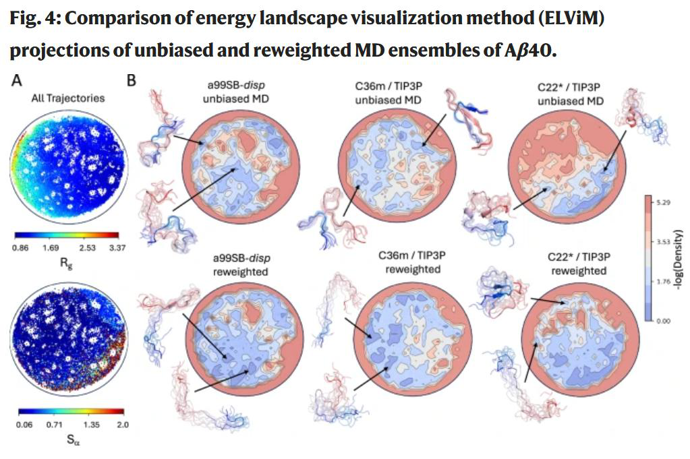
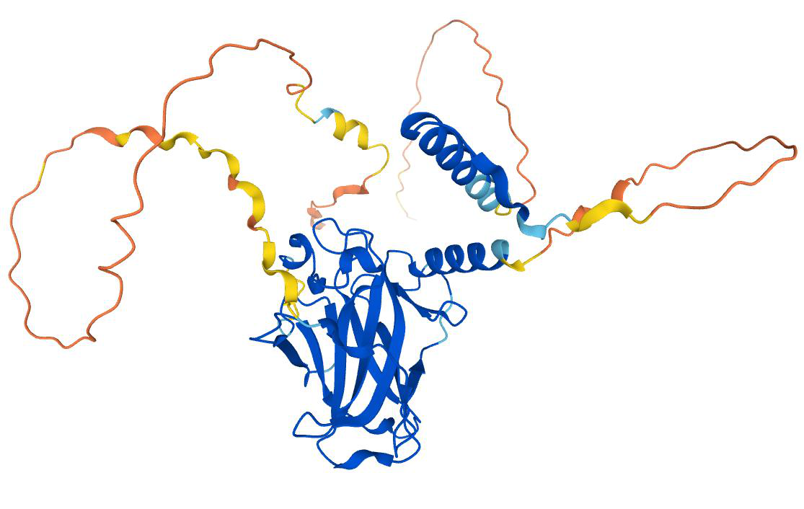
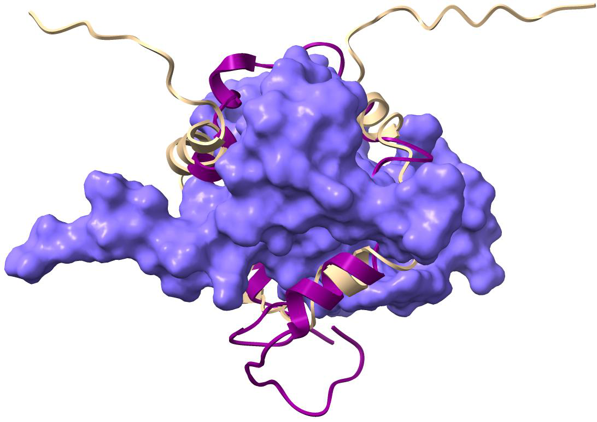
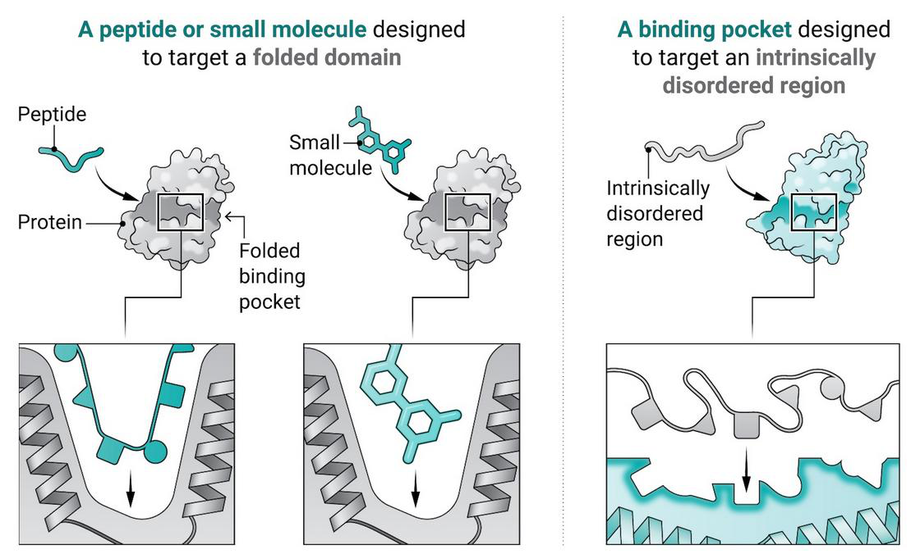

Intrinsically Disordered Proteins
For decades, the central dogma of structural biology was “structure determines function.” Anfinsen’s thermodynamic hypothesis, the lock-and-key model, and the success of X-ray crystallography all reinforced a single idea: a protein’s biological activity depends on a well-defined three-dimensional fold. But by the late 1990s, Wright and Dyson (Wright and Dyson 1999), and independently Dunker and colleagues (Dunker et al. 2001), accumulated evidence that many functional proteins lack stable tertiary structure under physiological conditions. The p53 transactivation domain, which binds MDM2 and activates transcription, is fully disordered in isolation (Kussie et al. 1996). It folds only upon binding its partner. The crystallographers had not failed to solve these structures. The structures did not exist.
This chapter treats proteins that break the structure-function rule. We begin with the physics of disordered polypeptide chains, treating them as statistical ensembles rather than single conformations. We then develop computational methods for predicting disorder from sequence, discuss how disordered regions contribute to biological function, and close with the connection between low-complexity disordered domains and liquid-liquid phase separation in cells.
Biophysics of Disorder
A folded protein occupies a narrow basin in conformational space. An
intrinsically disordered protein (IDP) does not. Under native
conditions, an IDP samples a broad distribution of conformations, and no
single structure represents the molecule adequately.The term “intrinsically disordered” was popularized by
Dunker et al. (Dunker et
al. 2001). Wright and Dyson (Wright and Dyson 1999) used
“intrinsically unstructured.” Both terms refer to the same phenomenon:
functional proteins that lack a fixed tertiary fold under physiological
conditions.
The correct description is an ensemble: a probability
distribution over the space of backbone dihedral angles, weighted by the
Boltzmann factor \(e^{-E/k_BT}\).

Experimentally, this ensemble manifests in specific ways. In NMR spectroscopy, disordered regions show narrow chemical shift dispersion, because the rapid interconversion between conformers averages the local magnetic environments. In small-angle X-ray scattering (SAXS), IDPs produce scattering profiles consistent with extended, flexible chains rather than compact globules. Circular dichroism spectra of IDPs typically show a strong negative band near 200 nm and weak signal at 222 nm, indicating the absence of stable \(\alpha\)-helical or \(\beta\)-sheet content.
The simplest physical model for a disordered chain is the random coil. Consider a polymer of \(N\) bonds, each of length \(l\), with the direction of each bond chosen independently. The mean-square end-to-end distance of a freely jointed chain is \[\langle R^2 \rangle_{\text{free}} = N \, l^2. \label{eq:freely-jointed}\]
Real polypeptide chains are not freely jointed. Bond angles are
constrained, and rotations around backbone bonds are correlated over
short distances. Flory accounted for these local stiffness effects with
the characteristic ratio \(C_N\):Paul Flory developed the statistical mechanics of
polymer chains in the 1950s and 1960s. His 1969 monograph
Statistical Mechanics of Chain Molecules (Flory 1969) remains the standard
reference. Flory won the Nobel Prize in Chemistry in 1974.
\[\langle R^2 \rangle = C_N
\cdot N \cdot l^2,
\label{eq:flory-random-coil}\] where \(C_N\) captures the deviation from ideal
random-walk statistics due to fixed bond angles and short-range steric
effects. For polypeptides, \(C_N\)
typically ranges from 8 to 12, depending on the amino acid composition.
A high proline content, for instance, stiffens the backbone and
increases \(C_N\). As \(N \to \infty\), \(C_N\) converges to the characteristic ratio
\(C_\infty\).
Beyond local stiffness, the
long-range behavior of polymer chains depends on the balance between
chain-chain and chain-solvent interactions. This balance is captured by
the scaling exponent \(\nu\) in the
relation \[R_g \sim N^{\nu},
\label{eq:scaling-law}\] where \(R_g\) is the radius of gyration. Three
regimes matter. In a good solvent, where monomer-solvent contacts are
favored over monomer-monomer contacts, excluded volume effects swell the
chain. Flory’s mean-field argument gives \(\nu
= 3/5\); the more precise renormalization group result is \(\nu = 0.588\).The Flory exponent \(\nu =
3/(d+2)\) gives \(\nu = 3/5 =
0.6\) in three dimensions. The exact value from renormalization
group theory is \(\nu \approx
0.588\) (Gennes
1979). The difference is small but measurable in careful SAXS
experiments on long IDPs.
In a theta solvent, where attractive and repulsive
interactions exactly cancel, the chain behaves as an ideal random walk
with \(\nu =
1/2\). In a poor solvent, where monomer-monomer contacts are
preferred, the chain collapses into a compact globule with \(\nu = 1/3\).
For IDPs in aqueous solution, the effective solvent quality depends on the amino acid sequence. Highly charged, low-hydrophobicity sequences behave as expanded chains with \(\nu\) near 0.588. Sequences with more hydrophobic residues adopt more compact ensembles, with \(\nu\) approaching 1/3. Folded proteins represent the extreme of this spectrum: they are effectively in a poor solvent for their own backbone, collapsed into a state where \(\nu \approx 1/3\) and the packing density approaches that of organic crystals.
What determines whether a protein is ordered or disordered? Two sequence properties are strong predictors: mean hydrophobicity and mean net charge (Uversky, Gillespie, and Fink 2000). Ordered proteins tend to have higher hydrophobicity (which stabilizes the hydrophobic core) and lower net charge (which reduces electrostatic repulsion within the folded state). Disordered proteins invert this pattern: their sequences are enriched in charged and polar residues (Glu, Asp, Lys, Arg, Gln, Ser, Pro) and depleted in hydrophobic residues (Ile, Leu, Val, Trp, Phe, Tyr).
Uversky and colleagues formalized this observation with the
charge-hydropathy plot (Uversky, Gillespie, and Fink 2000). On
this plot, the \(x\)-axis is the mean
absolute net charge per residue \(\langle |q|
\rangle / N\), and the \(y\)-axis is the mean Kyte-Doolittle
hydrophobicity \(\langle H \rangle\). A
linear boundary separates ordered and disordered proteins with
reasonable accuracy: \[\langle H
\rangle_{\text{boundary}}
= \frac{\langle |q| \rangle / N + 1.151}{2.785}.
\label{eq:uversky-boundary}\] Proteins above this line (high
hydrophobicity, low charge) tend to fold. Proteins below it (low
hydrophobicity, high charge) tend to be disordered.The Uversky plot is a useful heuristic, but it captures
only two of many relevant sequence features. Proline content, for
example, disrupts secondary structure. Low-complexity regions (polyQ,
polyN) are often disordered despite moderate hydrophobicity. More recent
predictors incorporate dozens of features.
A third sequence property associated with disorder is low complexity. Many IDPs contain long stretches of repetitive or compositionally biased sequence: polyglutamine tracts, serine/arginine-rich regions, glycine-rich loops. These sequences lack the information content needed to specify a unique fold. We return to low-complexity domains in the context of phase separation later in this chapter.
Disorder Prediction
Given the difficulty of characterizing disordered proteins experimentally (they resist crystallization, and NMR ensemble methods are labor-intensive), computational prediction from amino acid sequence has become the primary tool for identifying disordered regions at scale.
The IUPred algorithm, developed by
Dosztányi and colleagues (Dosztányi et al. 2005;
Mészáros, Erdős, and Dosztányi 2018), takes a physicochemical
approach. The central idea is that ordered regions form enough
stabilizing pairwise contacts to compensate for the conformational
entropy lost upon folding, while disordered regions cannot. IUPred
estimates the pairwise interaction energy for each residue based on a
statistical potential derived from globular protein structures. For
residue \(i\), the estimated energy is
\[\Delta G_i = \sum_{j} f(r_{ij}) \cdot
e_{ij},
\label{eq:iupred-energy}\] where the sum runs over residues
\(j\) within a sequence window, \(e_{ij}\) is a statistical potential that
depends on the amino acid types at positions \(i\) and \(j\), and \(f(r_{ij})\) is a weighting function that
depends on the sequence separation \(|i-j|\).IUPred does not use three-dimensional coordinates. The
term \(r_{ij}\) here refers to sequence
distance, not spatial distance. The statistical potential was
parameterized from contact maps of known globular structures, then
applied to predict contacts for novel sequences.
Residues that are predicted to form many favorable
contacts (low \(\Delta G_i\)) are
classified as ordered. Residues with few predicted favorable contacts
(high \(\Delta G_i\)) are classified as
disordered.
The updated version, IUPred2A (Mészáros, Erdős, and Dosztányi 2018), introduced context-dependent predictions. A protein’s disorder state may change depending on its redox environment (cysteine-rich regions can form disulfide bonds under oxidizing conditions, stabilizing structure) or whether it is bound to a partner. IUPred2A models these effects by adjusting the energy calculation to account for additional stabilizing interactions present under specific cellular conditions.
An alternative class of predictors exploits compositional bias directly. These methods train classifiers on the amino acid composition of known disordered and ordered regions. The simplest version computes a per-residue disorder propensity based on the frequency of each amino acid type in experimentally verified disordered regions versus ordered regions from the Protein Data Bank. Residues in regions enriched in disorder-promoting amino acids (Ala, Arg, Gly, Gln, Ser, Glu, Lys, Pro) score high, while residues in regions enriched in order-promoting amino acids (Trp, Cys, Phe, Ile, Tyr, Val, Leu) score low. These methods are fast and interpretable, though they miss context-dependent effects that arise from the specific sequence neighborhood.
Because individual predictors have complementary strengths, meta-predictors combine their outputs. MobiDB-lite (Necci, Piovesan, and Tosatto 2021) runs multiple disorder prediction algorithms in parallel and assigns a consensus disorder annotation. A residue is labeled disordered only if a majority of the constituent methods agree. This consensus approach reduces the false positive rate at the cost of some sensitivity, producing annotations that are more conservative but more reliable than any single method.
A surprising recent development came
from AlphaFold (Jumper et
al. 2021). The predicted Local Distance Difference Test (pLDDT)
score, which AlphaFold produces as a per-residue confidence estimate,
turns out to be a strong disorder predictor. Regions where AlphaFold
reports low confidence (pLDDT \(<
50\)) correspond closely to experimentally validated disordered
regions (Tunyasuvunakool et al. 2021).
This makes intuitive sense: AlphaFold was trained on protein structures
from the PDB, so residues that have no well-defined structure in nature
should produce low-confidence predictions. The entire AlphaFold Protein
Structure Database can thus be mined for disorder annotations by
thresholding pLDDT, providing proteome-wide disorder maps at no
additional computational cost beyond the structure predictions
themselves.There is a subtlety here. Low pLDDT could indicate
genuine intrinsic disorder, but it could also flag regions where
AlphaFold simply lacks sufficient evolutionary information (poor MSA
quality). In practice, for well-covered sequences, the correlation
between low pLDDT and experimental disorder is strong.

AlphaFold pLDDT coloring reveals disordered regions.
Functional Disorder
The existence of disordered proteins would be unremarkable if they
were merely non-functional linkers between globular domains. They are
not. Disordered regions are central to signaling, transcription, and
regulation across all domains of life, and their prevalence increases
with organism complexity.In E. coli, roughly 4% of proteins contain
long disordered regions (\(>30\)
consecutive disordered residues). In humans, the fraction exceeds
30% (Oldfield and
Dunker 2014). The expansion of disorder correlates with the
expansion of regulatory complexity in eukaryotes.
The question is how a region without a fixed structure
can perform specific biological functions.
Molecular Recognition Features (MoRFs) provide one answer. A MoRF is a short segment, typically 10–70 residues, within a longer disordered region that undergoes a disorder-to-order transition upon binding a structured partner (Oldfield and Dunker 2014). The p53 transactivation domain mentioned in the opening is a canonical MoRF: its 15-residue segment (residues 18–26) forms an \(\alpha\)-helix only when bound to the hydrophobic cleft of MDM2 (Kussie et al. 1996). In isolation, this segment samples a heterogeneous ensemble of extended and partially helical conformations.

Coupled folding and binding of a disordered protein.
The thermodynamic cost of this coupled folding and binding reaction
is real. The MoRF must pay an entropic penalty to adopt a single
conformation, which reduces the net binding free energy compared to a
pre-folded peptide binding the same site. Why, then, has evolution
preserved this apparently wasteful mechanism? One advantage is
specificity without excessive affinity. Signaling interactions often
require binding that is tight enough to be specific but weak enough to
be rapidly reversible. The entropic penalty of folding upon binding
tunes the \(K_d\) into the micromolar
range, appropriate for transient signaling interactions, even when the
enthalpic contacts at the interface are extensive.This is sometimes called the “entropic counterweight”
principle. A pre-folded helix binding MDM2 would have a \(K_d\) in the nanomolar range or tighter,
which would make the interaction too stable for rapid signaling.
Short Linear Motifs (SLiMs), also called Eukaryotic Linear Motifs (ELMs), are a related but distinct class of functional elements in disordered regions (Van der Lee et al. 2014; Davey et al. 2012). SLiMs are short peptide segments, typically 3–10 residues, defined by a consensus sequence pattern. They mediate protein-protein interactions, post-translational modifications, and subcellular targeting. The PxIxIT motif that binds calcineurin, the LXCXE motif that binds retinoblastoma protein, and the PY-NLS motif recognized by importin-\(\beta\) are well-characterized examples.
SLiMs are overwhelmingly located in disordered regions, and this is not coincidental. A SLiM must be accessible to its binding partner, and burial within a globular core would prevent this. Disorder provides the conformational flexibility needed for the motif to adopt the correct geometry upon binding. The compactness of the motif (often only 3–5 specificity-determining residues) means that it can evolve rapidly: a few point mutations in a disordered tail can create or destroy a SLiM, rewiring a signaling pathway without disrupting the protein’s folded domains.
The “fly-casting” mechanism, proposed by Shoemaker, Portman, and Wolynes (Shoemaker, Portman, and Wolynes 2000), offers a kinetic rationale for coupled folding and binding. Consider a disordered protein searching for its binding partner by diffusion. In its extended, disordered state, the protein has a larger hydrodynamic radius than it would in a compact, folded conformation. This extended state increases the capture radius for the initial encounter with the target. Once contact is made, the disordered protein folds around its partner, locking in the specific interactions.
The quantitative argument proceeds as follows. The diffusion-limited association rate \(k_{\text{on}}\) for two spherical molecules scales with the sum of their radii: \[k_{\text{on}} \sim D \cdot (R_1 + R_2), \label{eq:fly-casting}\] where \(D\) is the relative diffusion coefficient and \(R_1\), \(R_2\) are the effective radii. An extended disordered chain with \(R_g \sim N^{0.588}\) presents a larger target than a compact folded domain with \(R_g \sim N^{1/3}\). For a 100-residue segment, the ratio is roughly \((100^{0.588}) / (100^{0.333}) \approx 15 / 4.6 \approx 3.2\), a threefold enhancement in effective capture radius. The tradeoff is that not all initial contacts are productive: the disordered chain must find the correct binding mode through a combination of sliding and local folding, which introduces a kinetic cost. Whether fly-casting provides a net kinetic advantage depends on the balance between these effects, and the evidence suggests it does for many IDP-target interactions where the initial encounter is rate-limiting.
Not all disorder disappears upon binding. Tompa and Fuxreiter introduced the concept of “fuzzy complexes” to describe protein-protein interactions in which one or both partners retain significant disorder in the bound state (Tompa and Fuxreiter 2008). In a fuzzy complex, the disordered regions do not fold into a single conformation upon binding. Instead, they remain dynamic, sampling multiple conformations while maintaining the interaction.
The Sic1-Cdc4 interaction in yeast cell-cycle regulation is a well-studied example. Sic1 contains multiple phosphorylation sites in a disordered region. When phosphorylated, these sites bind the WD40 domain of Cdc4, but Sic1 remains largely disordered in the complex. The binding depends on the total number of phosphorylated residues rather than any single phosphosite, suggesting a polyelectrostatic interaction where multiple weak, transient contacts collectively stabilize the complex. This “ultrasensitive” binding, requiring a threshold number of phosphorylations before Sic1 is recognized by Cdc4, acts as a molecular switch for cell-cycle progression.

Phase Separation and Low-Complexity Domains
In 2009, Brangwynne, Hyman, and Jülicher reported that P granules in
C. elegans embryos behave as liquid droplets (Brangwynne et al.
2009). These membrane-less organelles fuse, drip, and dissolve in
response to concentration changes, exactly as expected for a liquid
phase coexisting with the surrounding cytoplasm. The discovery that
cells use liquid-liquid phase separation (LLPS) to organize their
interiors opened a new field at the intersection of polymer physics and
cell biology.Membrane-less organelles had been observed for over a
century (the nucleolus was described in the 1830s), but their physical
nature was not understood until the Brangwynne et al. experiments. The
language of phase transitions gave biologists a quantitative framework
for thinking about these structures.
The thermodynamics of LLPS follow from classical polymer solution theory. Consider a solution of multivalent macromolecules. At low concentrations, the molecules are dispersed. Above a threshold concentration \(c_{\text{sat}}\) (the saturation concentration), the solution separates into a dilute phase (at concentration \(c_{\text{sat}}\)) and a dense phase (at concentration \(c_{\text{dense}}\)). The driving force for phase separation is that the free energy of the homogeneous solution exceeds that of the two-phase system: the favorable interactions in the dense phase outweigh the entropy of mixing lost by concentrating the molecules.
The Flory-Huggins free energy of mixing for a polymer solution is
\[\frac{\Delta G_{\text{mix}}}{k_B T}
= \frac{\phi}{N} \ln \phi
+ (1 - \phi) \ln(1 - \phi)
+ \chi \, \phi \, (1 - \phi),
\label{eq:flory-huggins}\] where \(\phi\) is the polymer volume fraction,
\(N\) is the degree of polymerization,
and \(\chi\) is the Flory-Huggins
interaction parameter.The parameter \(\chi\)
captures the balance between polymer-polymer, polymer-solvent, and
solvent-solvent interactions. When \(\chi\) is large and positive (unfavorable
polymer-solvent contacts), phase separation is favored. For proteins,
\(\chi\) depends on temperature, salt
concentration, pH, and post-translational modifications.
The first two terms represent the entropy of mixing
(always favorable), while the third term captures the enthalpy of
polymer-solvent interactions. Phase separation occurs when \(\chi\) exceeds a critical value \[\chi_c = \frac{1}{2}\left(1 +
\frac{1}{\sqrt{N}}\right)^{\!2},
\label{eq:chi-critical}\] which for large \(N\) approaches \(1/2\). The binodal curve, obtained by
equating chemical potentials in the two phases, defines the coexistence
boundary in the \((\phi, T)\) or \((\phi, \chi)\) plane.
Low-complexity domains (LCDs) are the primary sequence elements driving LLPS in biological systems (Banani et al. 2017). These domains are characterized by repetitive, compositionally biased sequences: polyglutamine (polyQ), arginine-glycine-glycine (RGG) repeats, serine-rich and asparagine-rich regions, and prion-like domains rich in polar residues (Gln, Asn, Ser, Gly, Tyr). LCDs are almost always intrinsically disordered, and their low sequence complexity means they cannot specify a unique fold.
The physical interactions driving LCD-mediated phase separation vary by sequence composition. RGG-rich domains engage in cation-\(\pi\) interactions between arginine and aromatic residues (especially tyrosine), as well as charge-charge interactions. PolyQ domains are stabilized by hydrogen bonds between glutamine side chains. Prion-like domains, such as those found in FUS and hnRNPA1, rely on a combination of \(\pi\)-\(\pi\) stacking among aromatic residues (particularly tyrosine), hydrogen bonding, and hydrophobic contacts. These weak, multivalent interactions collectively drive the formation of a condensed phase.
The concept of multivalency is central to this picture. A single weak interaction (\(K_d\) in the millimolar range) cannot drive phase separation on its own. But when a protein contains many such interaction sites, distributed along a disordered chain, the collective effect produces a sharp concentration-dependent transition. The valence of the molecule (the number of interaction sites) controls the shape of the phase diagram: higher valence lowers \(c_{\text{sat}}\) and widens the two-phase region.
The connection to disease became apparent when Patel and colleagues showed that purified FUS protein undergoes LLPS in vitro, forming liquid droplets that mature over time into solid, amyloid-like aggregates (Patel et al. 2015). Disease-associated mutations in FUS, found in patients with amyotrophic lateral sclerosis (ALS), accelerated this liquid-to-solid transition. The functional liquid state (FUS droplets participate in RNA processing and stress granule formation) is distinct from the pathological solid state, and the mutations shift the equilibrium toward the latter.
TDP-43, another RNA-binding protein mutated in ALS and frontotemporal dementia, follows a similar pattern. Its C-terminal low-complexity domain drives phase separation, and disease mutations promote aberrant solidification of the condensed phase. The same logic extends to huntingtin (polyQ expansion in Huntington’s disease) and tau (in Alzheimer’s disease and other tauopathies), where disordered, low-complexity, or aggregation-prone regions undergo transitions from functional liquid-like states to pathological solid or fibrillar states.
This perspective reframes neurodegeneration not as a simple protein
aggregation problem but as a phase transition gone wrong. The cell
maintains its condensates in a metastable liquid state through active
processes: ATP-dependent chaperones, post-translational modifications
that tune interaction strengths, and continuous turnover of condensate
components. When these quality-control mechanisms fail, whether through
aging, mutation, or cellular stress, the liquid condensates solidify
into the inclusions and plaques characteristic of neurodegenerative
disease.The phase-transition model does not replace earlier
models of protein aggregation. It provides a physical framework that
connects normal condensate biology to pathological aggregation. The key
insight is that many disease-associated proteins are not aberrantly
aggregating from a soluble state; they are transitioning from a
functional condensed liquid to a pathological solid within pre-existing
condensates.
Chapter Notes
The discovery that functional proteins can lack fixed structure had a slow beginning. Schweers et al. (1994) showed that tau protein is “natively unfolded,” and Weinreb et al. (1996) demonstrated the same for \(\alpha\)-synuclein. But the field gained momentum with the reviews by Wright and Dyson (Wright and Dyson 1999) and the large-scale bioinformatics analyses by Dunker et al. (Dunker et al. 2001), which established that disorder is not rare but widespread. Oldfield and Dunker (Oldfield and Dunker 2014) review the functional roles of intrinsic disorder in detail.
The polymer physics of IDPs draws on the classical theory developed by Flory (Flory 1969) and de Gennes (Gennes 1979). The application of polymer scaling laws to IDPs was advanced by Hofmann et al. (2012), who used single-molecule FRET to measure \(\nu\) for a series of IDPs and showed that their scaling behavior spans the range from expanded chains to compact globules, depending on sequence composition.
The Uversky charge-hydropathy plot was introduced in Uversky et al. (Uversky, Gillespie, and Fink 2000). While the original linear boundary works well for fully disordered versus fully ordered proteins, it does not capture partial disorder or context-dependent disorder. Das and Pappu (2013) extended the charge-based analysis by showing that the patterning of charged residues along the sequence, not just the total charge, affects the ensemble dimensions of IDPs.
IUPred was first described by Dosztányi et al. (Dosztányi et al. 2005). The updated version, IUPred2A (Mészáros, Erdős, and Dosztányi 2018), added context-dependent prediction and integration with the ANCHOR algorithm for predicting binding sites in disordered regions. MobiDB-lite (Necci, Piovesan, and Tosatto 2021) provides a consensus approach, and the ELM database (Davey et al. 2012) catalogs experimentally validated short linear motifs in disordered regions.
The use of AlphaFold pLDDT as a disorder predictor was first noted by Tunyasuvunakool et al. (Tunyasuvunakool et al. 2021) and has since been validated across multiple proteomes. Wilson et al. (2023) provide a careful benchmarking study comparing pLDDT-based disorder prediction against dedicated disorder predictors, finding that pLDDT performs competitively but can miss some types of conditional disorder.
The fly-casting mechanism was proposed by Shoemaker et al. (Shoemaker, Portman, and Wolynes 2000). The concept of fuzzy complexes originates with Tompa and Fuxreiter (Tompa and Fuxreiter 2008). The Sic1-Cdc4 ultrasensitive switch was characterized by Mittag et al. (2008, 2010), who showed that the polyelectrostatic model quantitatively explains the threshold behavior.
The literature on biological phase separation has grown rapidly since Brangwynne et al. (Brangwynne et al. 2009). Banani et al. (Banani et al. 2017) provide a widely cited review of biomolecular condensates. The connection between phase separation and disease, particularly through the liquid-to-solid transition, was established by Patel et al. (Patel et al. 2015) for FUS. Alberti and Hyman (2021) offer a critical perspective on the field, cautioning against overinterpretation of in vitro phase separation experiments and emphasizing the need for in vivo validation. Mittag and Pappu (2022) discuss a conceptual framework for understanding phase separation in the context of cellular organization.
Van der Lee et al. (Van der Lee et al. 2014) give a detailed treatment of short linear motifs and their role in disordered proteins. For readers interested in the sequence determinants of phase separation, Martin and Holehouse (2020) discuss the molecular grammar of LCD-driven condensation and the role of specific amino acid types in determining phase behavior.